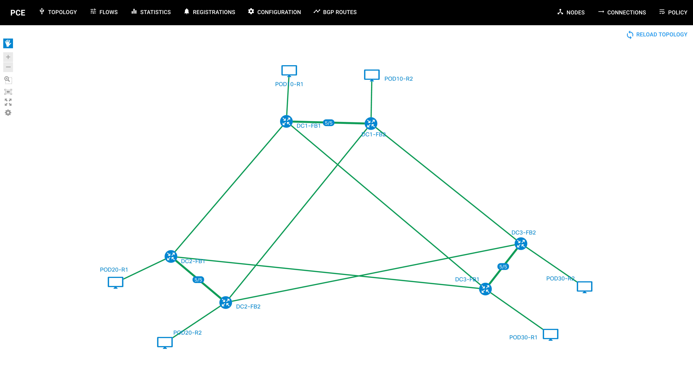

APIC-EM
APIC-EM is an open network modeling & reporting toolkit that provides Fast & Flexible, object-based network modeling for networks. NEXT was used by the project team to create network topolgies.

NeXt offers a comprehensive set of tools to leverage development and usage of real-world web applications. A number of teams across networking leaders chose NeXt, thanks to a huge capability to satisfy network visualization needs. The list of happy users includes Cisco, Verizon, AT&T, HP Enterprise, ZTE and NTS. NeXt was born and raised at Cisco and is now a part of OpenDaylight ecosystem.
Are we missing your app? Contact us to have us add it to this list.
APIC-EM is an open network modeling & reporting toolkit that provides Fast & Flexible, object-based network modeling for networks. NEXT was used by the project team to create network topolgies.
Virtual Internet Routing Lab (VIRL) provides a scalable, extensible network design and simulation environment. VIRL includes several Cisco Network Operating System virtual machines (IOSv, IOS-XRv, CSR1000v, NX-OSv, IOSvL2 and ASAv), as well as Ubuntu Linux 14.04 LTS . There is also extensive ability to integrate with third-party vendor virtual machines.

OpenFlow is a protocol for programming flow tables on switches. Path Computation Element - OpenFlow (PCE-OF) is a new ODL application that applies policy-based path computation and programming thus providing a level of "smart" traffic engineering to openflow networks.

Loki is an open network modeling & reporting toolkit that provides fast and flexible, object-based network modeling for networks. The project team used NeXt to visualize topologies in network model.